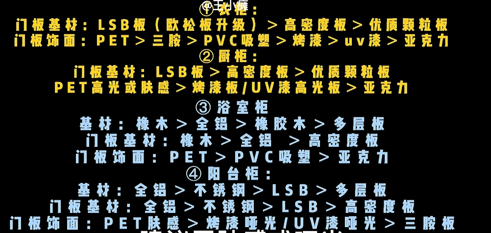
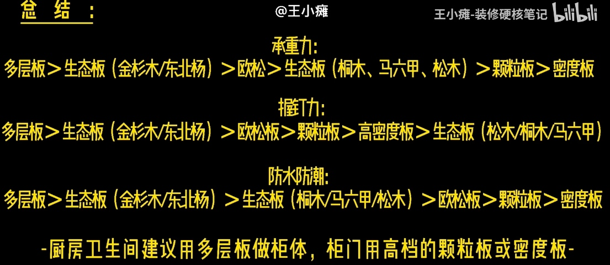
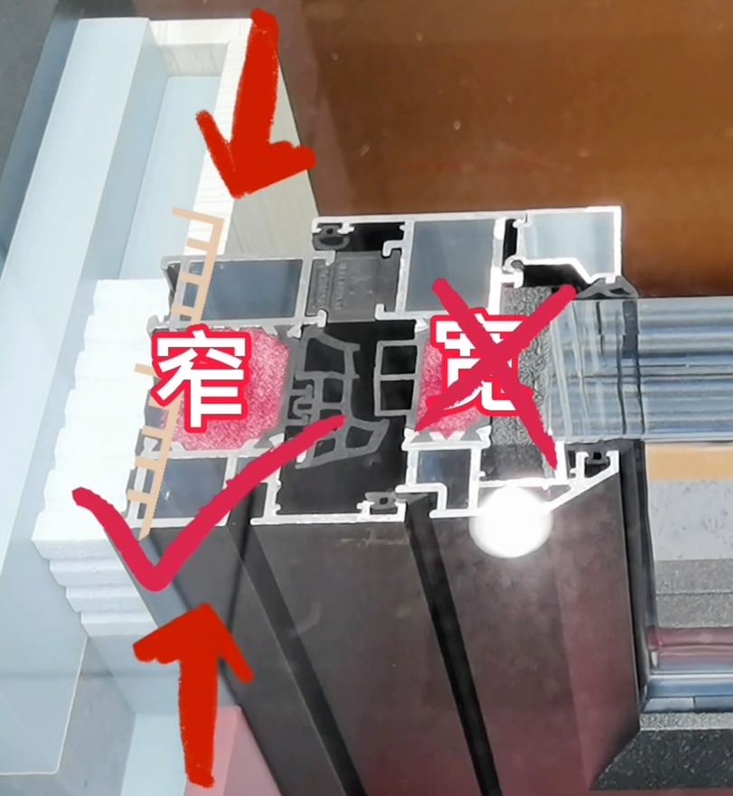
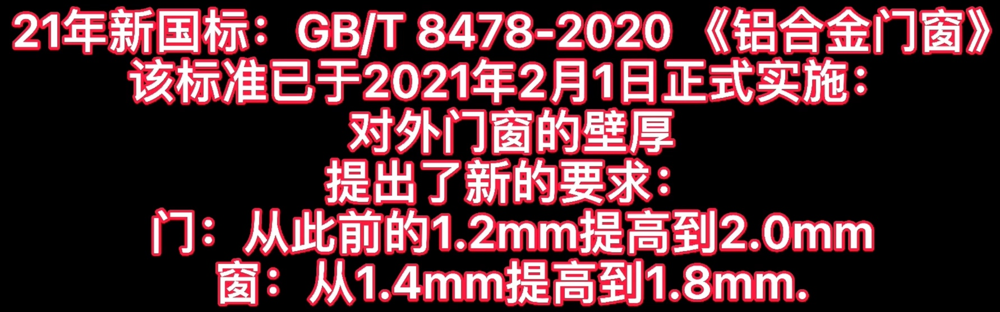
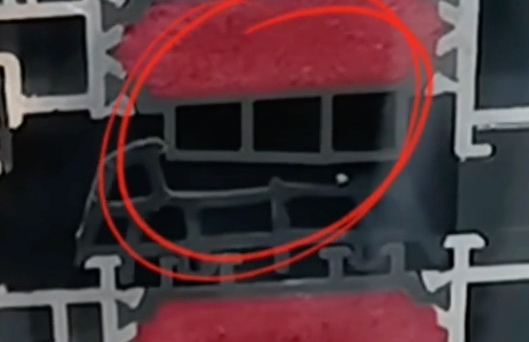
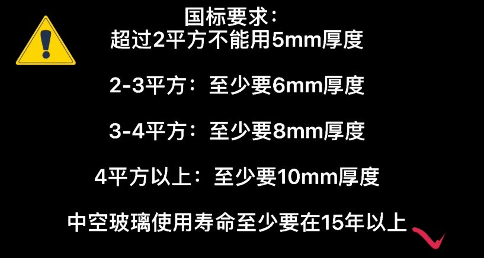
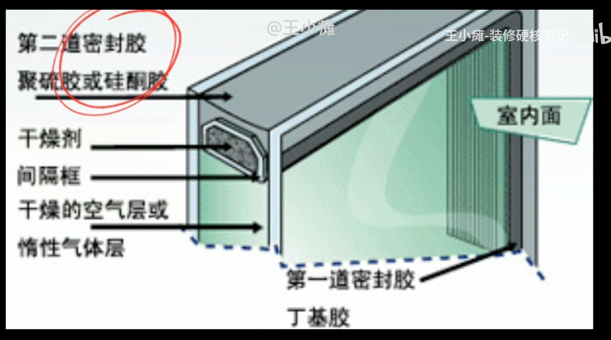
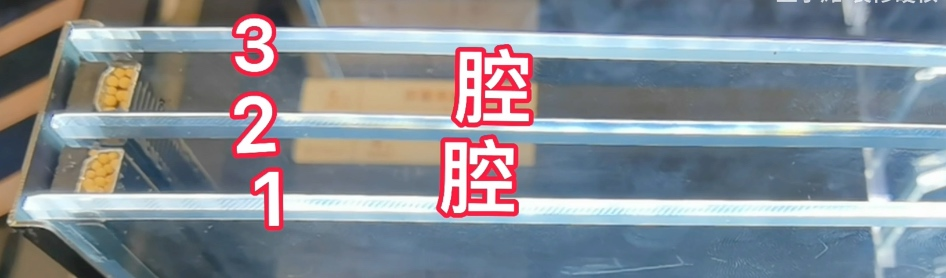
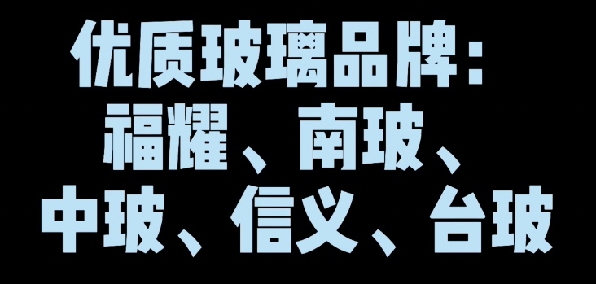
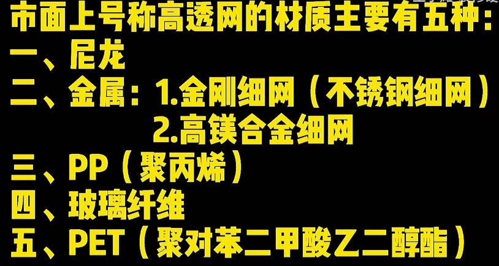

Copyright © 2015 Powered by MWeb, Theme used GitHub CSS.
3k-6k 小半龙猫床 二黑木作保龄床
6k-8k，MUU HOME和凡屋
要着重看龙骨骨架间隙，不要大于5cm
可以找沙发或者窗帘定制一个床头软包枕头，可拆卸
全屋建议：乳胶漆 > 艺术漆 > 墙布
局部提高视觉：护墙板 > 艺术漆/墙布
护墙板 优点是隔音隔热 近期流行木饰面
木饰面有分两种：成品定制版和正规渠道的科定板，不要选竹木纤维板，要注意安装收口细节是否处理到位
打算：电视背景墙和卧室背景墙，做局部视觉装饰

建议柜体选择多层实木板，柜门选择高密度板，或者质地紧实的颗粒板，总结如下：

优秀的系统门窗品牌有，旭格，贝洛克，墨瑟
不推荐塑钢和铝合金
不推荐购买推拉窗，密封性和气密性差
普通断桥铝和系统门窗，就相当于组装台式机和品牌台式机的区别
铝材，有铝材检测报告，报告上的规格需要是：
知名铝材品牌如下：
预算充足情况下，选择氟碳喷涂的铝材，表面平整度搞，手感很亲肤细腻
窗宽宽度，一般有65，70, 75, 85, 90, 120，具体是指

窄的地方的宽度，窗宽不要选择75以下的

壁厚至少要1.8mm起，壁厚要均匀
选择PA66 gf25，具体图片如下：
点火不会燃烧
隔热胶条一般是随着窗宽越宽越好，75系列的要做到4cm左右
要选择航架的隔热胶条，隔热性会更好

专业隔热条品牌，泰诺风
隔音隔热要更好，中间要防止聚氨酯发泡填充，保温棉效果会差很多
选三元乙丙橡胶条，常用品牌是江阴海达

窗户要做一体弯工艺，比较美观
黑色的丁基胶，第一道密封胶
灰色的密封胶，外层密封胶应该使用中性胶，酸性的会和丁基胶发生反应，会渗油或水
玻璃中间是惰性空气层，一般是打满90%的氩气
横剖面如下：

干燥剂要选择优质的分子筛
玻璃要选择更好的low-e镀膜，隔热性更强，其他膜会影响采光
中空玻璃间隙在9-27mm，建议选择12-15mm
我要选择三波两腔的，图如下：

隔音效果好的，要选中空夹胶玻璃，优质的玻璃品牌有如下图：

好评度高的品牌如下：

五金都是一套一套卖的，不存在单个零件多品牌的问题
现在流行高透网，材质如下图：

纱窗一定要做那种，可以轻松拆卸的
比较推荐铝合金高透和进口的PET高透
一般来说高透是20目，也有高级一点的48目
道德判断, 永远要先己后人。
爱因斯坦说: “真正的问题在于人的心灵与思想……让我们害怕的, 不是原子弹的爆炸力量, 而是人心的邪恶力量。”
我们每一个人都是问题的一部分。
安徒生有一个非常著名的成人童话, 叫作 《影子》 。故事的梗概是: 一个作家总是好奇对面阳台的人家, 越是看不到, 作家越是想偷窥。有一天, 作家的影子轻易投射到对面阳台, 影子看到了别人家的一切。后来作家醒来, 影子不见了。因为影子长大了, 离他而去。再后来影子回来了, 杀死了主人, 将主人取而代之。
我们每一个人都有一个黑暗的影子, 如果我们任由它长大, 有一天它会吞噬我们。
如果总是盯着他人的黑暗, 而无视自己内心的幽暗, 总有一天, 你的影子会吞掉你。
不要对人性抱以过高的期待, 永远要警惕人性深处的幽暗。法治的前提就是对人性败坏的假设, 所以任何人组成的权力机构都要受到法律严格的约束, 权力从来就不应被完全信任。
如果抛弃了这个假设, 认为人性良善, 法治也一定会为人治所取代, 对人性美好的假设往往都带来了空前的灾难。
因此, 这也是为什么绝大多数国家都很少在法律中规定单纯的“见危不救罪”, 法律只是对公民最低的道德要求。
刘某的懦弱令人遗憾, 值得谴责。
勇敢是一种高贵的品质, 但是不勇敢却没有必要如此口诛笔伐, 千夫所指, 甚至以犯罪论处。
法律只是对公民最低的道德要求。
每个人的心中都有一个“理想人”的范例, 用柏拉图的术语来说这叫作人的“共相”。这种“理想人”有着高尚、勇敢、知恩图报等诸多美德。
当他人的行为举止严重违反了“理想人”的标准, 就会激起我们内心的愤怒。这种愤怒本身是正常的。
虽然有很多人说人的“共相” (“理想人”范例) 并不存在, 它只是一种假设, 但我更愿意相信“共相”不是假设, 而是一种客观实在。正如人类无论用任何仪器都无法画出一个完美的圆, 但“圆”这个概念是客观存在的。
正是这种“理想人”的范例激起我们的道德意识, 也让我们一生可以不断行走在德行之路, 高山仰止, 虽不能至,心向往之。
理想人，高山仰止。
人为什么会进行道德谴责呢？动机多种多样，我想至少有如下理由：
- 我们心中“理想人”范例的召唤。
- 希望他人改过自新。
- 自以为是, 表达道德优越。
- 还有其他许多动机, 如博人眼球、营销造势、消费他人的痛苦等。
道德谴责，不管是冷热，都是由自己针对他人，那目的主要还是希望他人改过自新，其意义最大，而其他动机则表现为对自身的增益，可有可无。
西汉文帝之所以废除肉刑, 就是因为肉刑断人肢体, 毁人容貌, 是对人格的侮辱, 也彻底断绝了罪犯改过自新的可能。 所以当缇萦救父, 上书文帝, 缇萦短短数语, 戳中文帝泪点——“妾父为吏, 齐中称其廉平, 今坐法当刑, 妾切痛死者不可复生, 而刑者不可复续, 虽欲改过自新, 其路莫由。妾愿入身为官婢, 以赎父刑罪, 使得改行自新也。” (我的父亲做官吏, 齐地的人都说他清廉公平, 如今犯法应当获罪受刑。我为受刑而死的人不能复生感到悲痛,而受过刑的人不能再长出新的肢体, 即使想改过自新, 也没办法了。我愿意舍身做官府中的女仆来赎父亲的罪过, 让他能改过自新” ) 文帝后在废肉刑的诏书中直接援引少女缇萦之语——“虽欲改过自新, 其路莫由也。”
因此, 所有的道德谴责都不应该随意侮辱他人的人格,诸如“人渣”“狗男女” “禽兽”这种情绪化的表达在亵渎他人的同时也侮辱了自己。同时, 将他人在道德上彻底“批臭批死”也从此堵住了他人改过自新的可能。
留他人一条后路，给他人改过自新的机会。否则，不如以此为鉴，沉默自省。
道德与法律不同, 它主要是一种自律。 因此, 在开启道德谴责的阀门时, 一定也要进行自我的反省, 这样才能让本能的愤怒在正确的渠道中运行并产生积极的作用, 而不至于像洪水一般, 泛滥成灾。
老实说, 对于江歌案, 任何人都会感到愤怒, 人不能做到“太上而忘情”。但是, 当我陷入愤怒时, 心中的“理想人”告诉我要勇敢、要感恩、要知耻之时, 我首先把这种声音作为是对我自己的提醒。
当我批评他人懦弱的时候, 我真的希望自己能够勇敢一点, 我心中的“理想人”告诉我,“你真的不够勇敢。当你批评某个热点案件的当事人时, 除了加入集体情绪狂欢以外, 你还做了什么? 你敢不敢付出代价走出书斋,去帮助弱者, 去对抗不公, 去匡扶正义, 与悲伤的人一路同行?”
道德谴责终究停留在口头，要真正的走在对抗不公，匡扶正义的路上。
刑事辩护，“为罪行重大之人辩护，正是为了防止无辜之人枉受追究”。
今人多将刑事辩护追溯至古希腊, 却忘记了西方文明的另一重要源头——“希伯来—基督教信仰”。成书约公元前15世纪的《摩西五经》之一的《创世记》就有关于辩护的内容, 这远早于公元前8世纪才出现的古希腊文明。
《创世记》第十八章17—33节中, 当上帝欲毁灭所多玛和蛾摩拉两城时, 亚伯拉罕站了出来, 为这两城辩护。
亚伯拉罕近前来, 说: “无论善恶, 你都要剿灭吗? 假若那城里有五十个义人, 你还剿灭那地方吗? 不为城里这五十个义人饶恕其中的人吗? 将义人与恶人同杀, 将义人与恶人一样看待, 这断不是你所行的。审判全地的主岂不行公义吗?”耶和华说: “我若在所多玛城里见有五十个义人, 我就为他们的缘故饶恕那地方的众人。”亚伯拉罕说: “我虽然是灰尘, 还敢对主说话。假若这五十个义人短了五个, 你就因为短了五个毁灭全城吗?”他说: “我在那里若见有四十五个, 也不毁灭那城。”亚伯拉罕又对他说: “假若在那里见有四十个怎么样呢?”他说: “为这四十个的缘故, 我也不做这事。”亚伯拉罕说, 求主不要动怒, 容我说: “假若在那里见有三十个怎么样呢?”他说: “我在那里若见有三十个, 我也不作这事。”亚伯拉罕说:“我还敢对主说话, 假若在那里见有二十个怎么样呢?”他说: “为这二十个的缘故, 我也不毁灭那城。”亚伯拉罕说:“求主不要动怒, 我再说这一次, 假若在那里见有十个呢?”他说: “为这十个的缘故, 我也不毁灭那城。”耶和华与亚伯拉罕说完了话就走了; 亚伯拉罕也回到自己的地方去了。
《创世记》中的上帝通过欲毁灭罪城的案例, 生动形象地教导了亚伯拉罕何谓人类的公平正义以及如何对待有罪之人, 这奠定了刑事辩护制度的基本原则。上帝能够区分出有罪与无辜, 但人类则未必, 上帝用这个案例让亚伯拉罕思考, 人类如何建立一套制度来区分有罪与无辜。在这个上帝与人类交互式学习的案例中, 亚伯拉罕因为五十义人而质疑上帝毁城的决定, 上帝也乐意与他讨论, 最后亚伯拉罕以十个义人收尾。
上帝在教导亚伯拉罕, 人类的司法制度必然存在缺陷,最坏的制度是宁可错杀千人也不放过一人, 但为了不枉杀一人, 就放过千万个有罪之人, 也不太合适, 因此必须寻求一个平衡点。上帝同意亚伯拉罕的观点, 只要有足够的好人,就应该把整个团体, 包括其中的坏人一并饶过。但同时告诉亚伯拉罕如何在错杀与枉纵之间取得平衡, 所以最后亚伯拉罕到十人为止。
这个故事对于刑事辩护制度至关重要。上帝通过“案例教学”, 让亚伯拉罕学到了一堂生动的辩护课程。这个故事告诉我们, 辩护首先是防止冤枉无辜, 人类无法轻易区分谁有罪谁无罪, 如果只有明显无辜的人才能得到刑事辩护, 那么必将有大量无辜的人受冤枉。所多玛和蛾摩拉罪恶滔天,但仍应为其辩护, 为罪行重大之人辩护, 正是为了防止无辜之人枉受追究。[2]
其次,《创世记》中的上帝乐于亚伯拉罕向他挑战, 这正是告诉亚伯拉罕, 默许冤屈就是罪恶, 世俗社会的任何权威都应该接受质疑, 连上帝都可以接受亚伯拉罕的质询,更何况由理性有限的人类所组成的政府机构。即便是最好的人类道德和司法制度, 也是有可能误杀无辜的。所以,司法机关必须虚心接受律师的诘问质疑, 否则必然导致司法擅权专断, 腐败无能。
最后, 《创世记》中的上帝让亚伯拉罕知道, 世俗社会的公平正义就是寻找合适的平衡点, 辩护制度也不例外。
古希腊的人本主义传统会导致，律师以辩护人利益最大化为目的，而曲意逢迎，无主见且狡黠。柏拉图甚至直言“律师总是忙忙碌碌,似乎总有什么力量不断驱赶着他……他是一个奴隶。在他的主人面前, 与他同是奴隶的伙伴们争论不休”。
“希伯来—基督教”信仰强调神本主义, 一神论的信仰确认了绝对真理的客观存在, 上帝之道即为真理, 所谓“太初有道, 道与上帝同在, 道就是上帝”。因此, **辩护制度应当接受绝对真理的约束, 辩护必须在规则范围内行使。**按照这种信仰观, 辩护人在辩护时要受到限制, 十诫中第九诫“不可作假见证陷害人”当为辩护人之铁律; 同时人权也须受到限制, 正如亚伯拉罕在为罪城辩护的案例中所学习到的, 保障人权不能以完全牺牲惩罚犯罪为代价。
“辩护制度应当接受绝对真理的约束, 辩护必须在规则范围内行使”
律师制度的定位：
哈佛大学教授德肖维茨说: “一个国家是否有真正的自由, 试金石之一是它对那些为有罪之人、为世人不耻之徒辩护的人的态度。在大部分专制国家里, 独立自主的辩护律师队伍是不存在的。诚然, 专制压迫肆虐无忌的明显标志之一就是政府开始迫害辩护律师。”
人类历史上, 几乎所有的暴政最初都是利用民众对外族的仇恨, 如当初希特勒上台时鼓动德国人对法国的仇恨。
当仇恨在心中发芽、长大, 人也就慢慢忘记了最宝贵的东西是他的内在尊严, 而不在于外在的身份。
仇恨, 总有一天会让人把枪口调转, 从对外变成对内,进而对着自己的亲朋好友。
当人的心为仇恨所奴役, 他的肉体也必然 被外在的强权所奴役。
在美国拉斯维加斯枪击案这样一个特殊的时候, 愿你我感同身受, 让我们再次重温约翰·多恩古旧的布道辞“不要问丧钟为谁而鸣”:
“没有人是自成一体、与世隔绝的孤岛, 每一个人都是广袤大陆的一部分。如果海浪冲掉了一块岩石, 欧洲就减少。如同一个海岬失掉一角, 如同你的朋友或者你自己的领地失掉一块。每个人的死亡都是我的哀伤, 因为我是人类的一员。所以, 不要问丧钟为谁而鸣, 它就为你而鸣!”
爱, 是永不止息。
既然我们每天都在原谅一个不那么可爱的自己, 那么当别人做错事的时候, 当别人冒犯你时, 你是不是也能够爱人如己, 推己及人呢?
G 到文件尾部
:num num指的是行号
:vs file_path 左右打开文件
:sp file_path 上下打开文件
:winc j/k/h/l 上下左右窗口光标移动
查看文件夹目录底下的所有文件大小
du -h --max-depth=1
查看文件系统大小列表
df -h
grep去掉grep自身的进程并获取进程号
ps -eo pid,cmd | grep exec | grep -v grep | awk 'print {$1}'
ps 获取进程开始时间
ps -eo lstart,etime | grep exec
字符串截取 截取字符串中左边或者右边的字符串
name=filebeat/platform
echo ${name%/*} # = filebeat = 删除了字符 '/' 右边的所有字符
echo ${name##*/} # = platform = 删除了字符 '/' 左边的所有字符
Copyright © 2015 Powered by MWeb, Theme used GitHub CSS.